アアルトスタジオ
 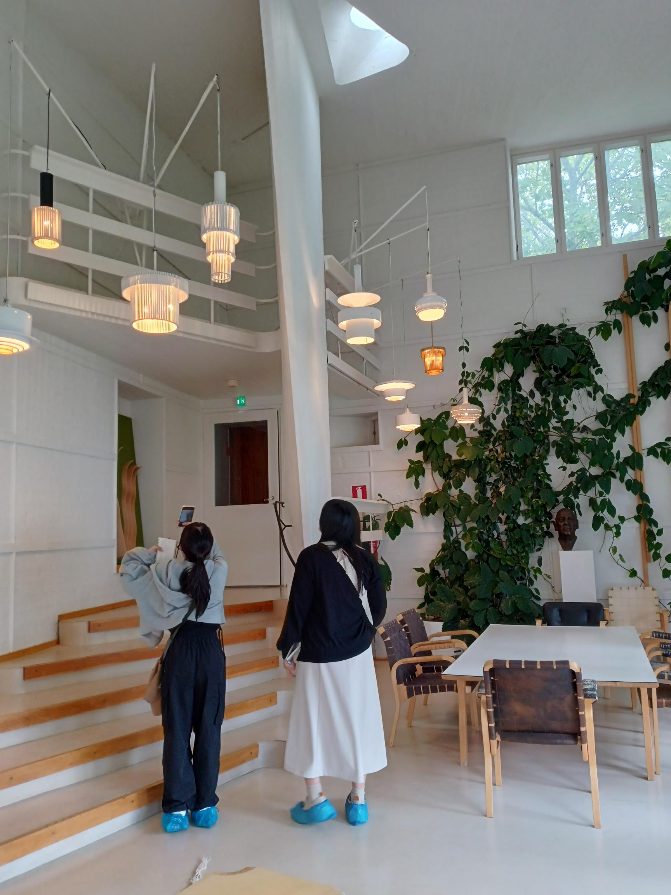
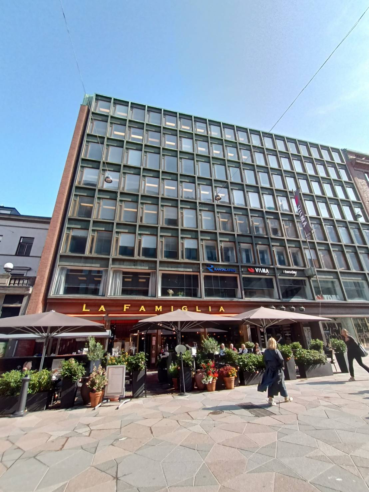
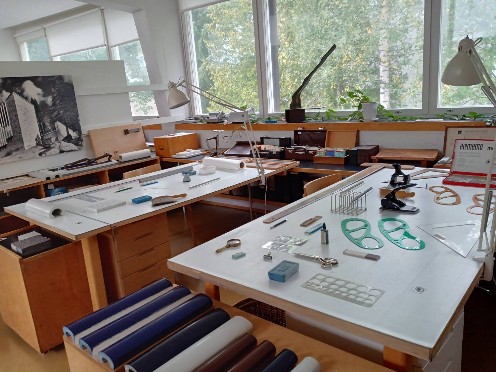
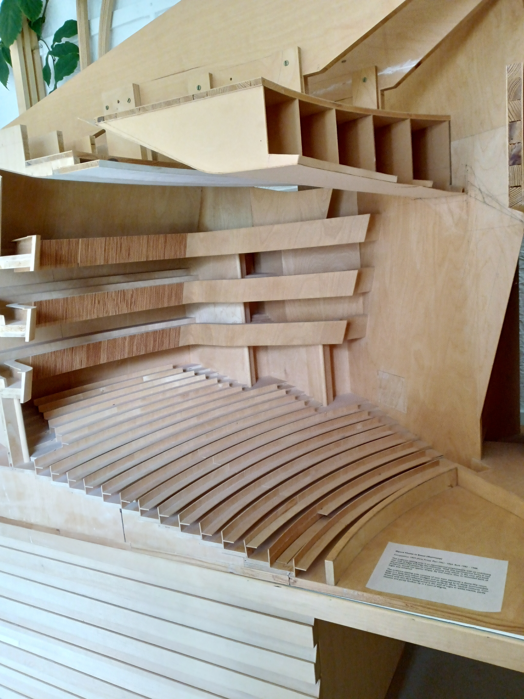
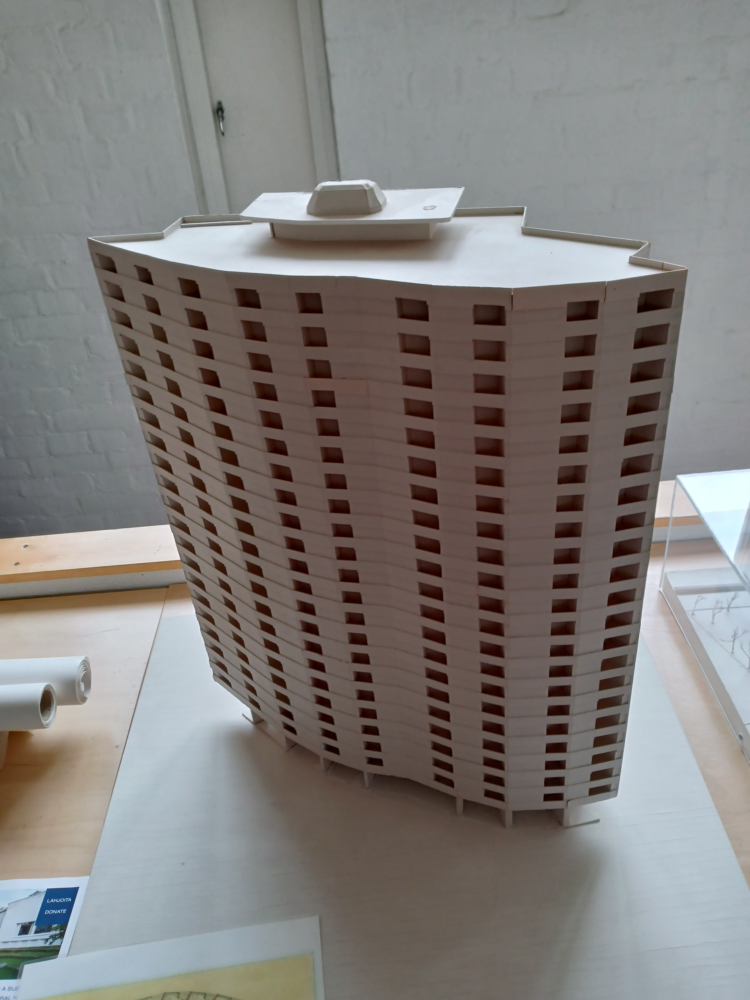
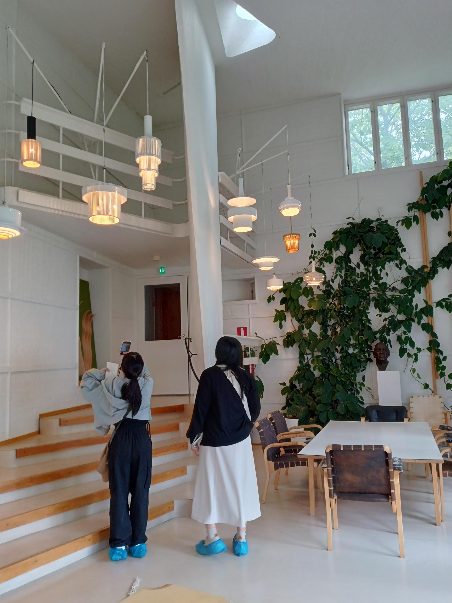
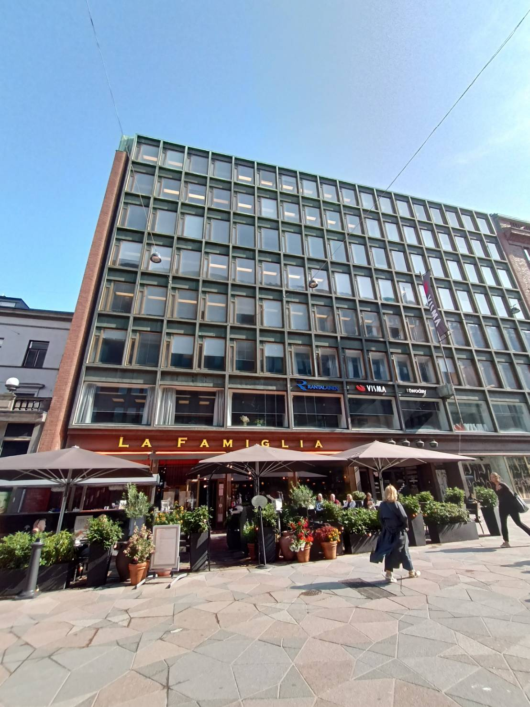
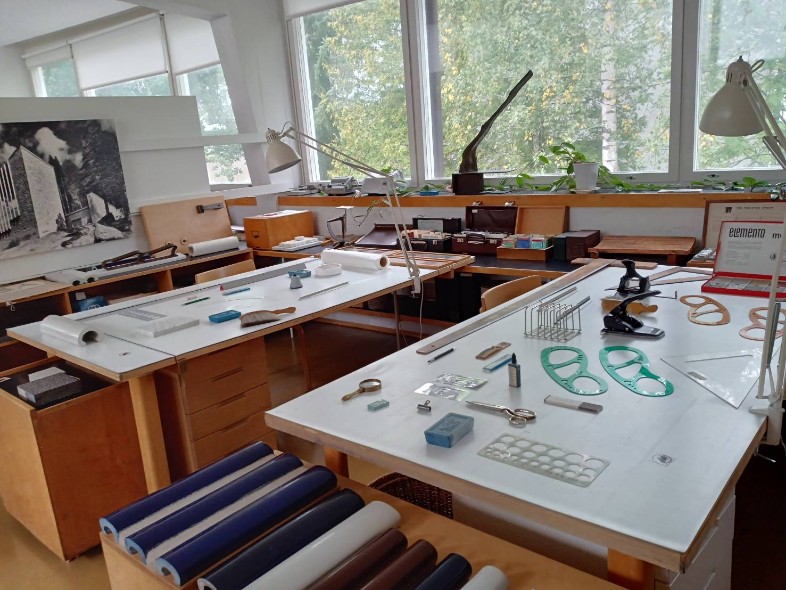
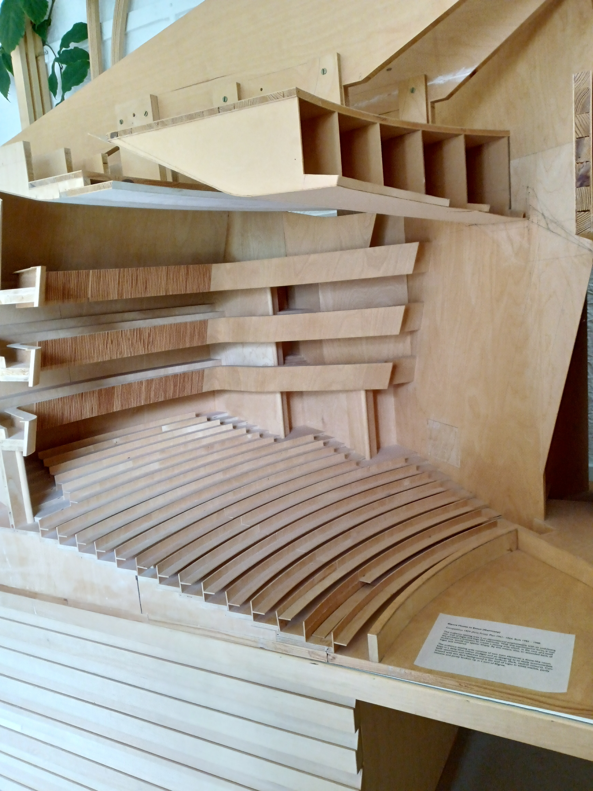
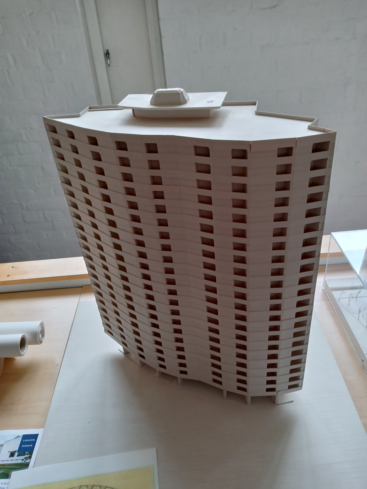
 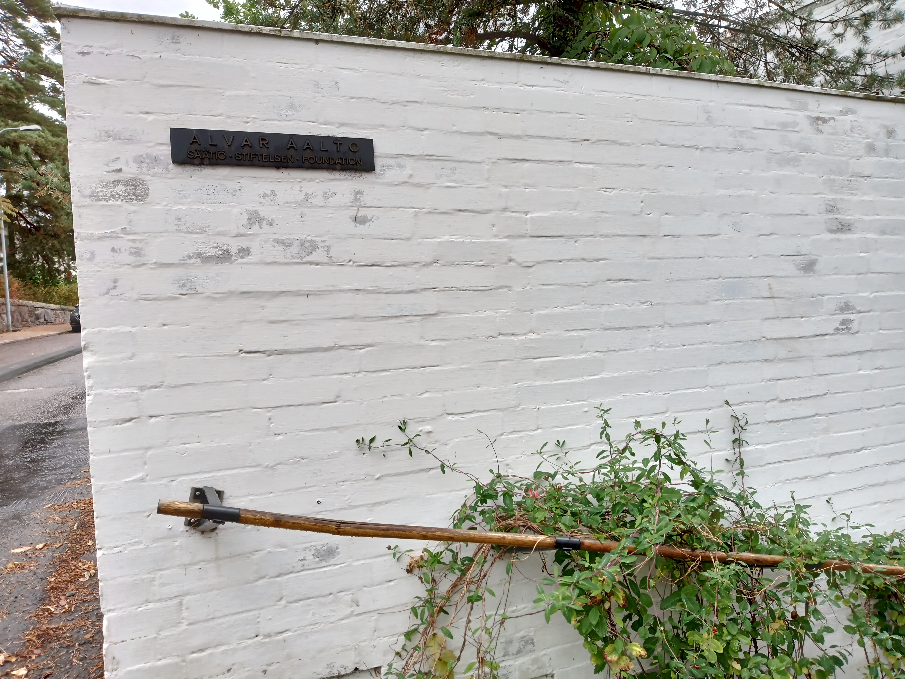
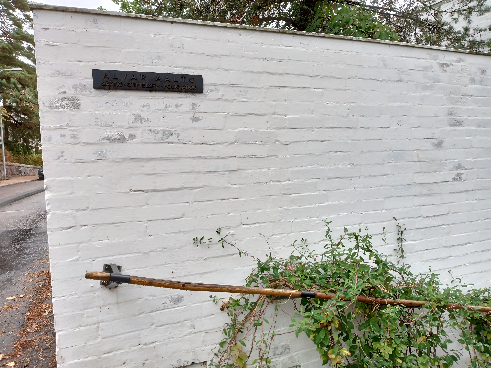
建築家アルヴァ・アアルトのスタジオ。照明がなくても十分な自然光が入る構造になっており、とても明るい。
明るい作業スペースと対照的に、食堂などの仕事以外の空間は狭く少し暗い。これはアアルトのこだわりである。
ロフトのようになっている場所は、アアルトが照明の出来を確認するために使われていたそうだ。
アアルト自邸と同じで、道路側に窓が少なく、
建物の裏手側には大きな窓をたくさん配置してある。アアルトの作業場の壁面の曲線とつながる中庭の円形劇場の階段の曲線が美しい。
現在はアアルトの建築の修復などを行っている団体が作業スペースを使用している。また、日本語でのガイドツアーを行っている。


一覧に戻る